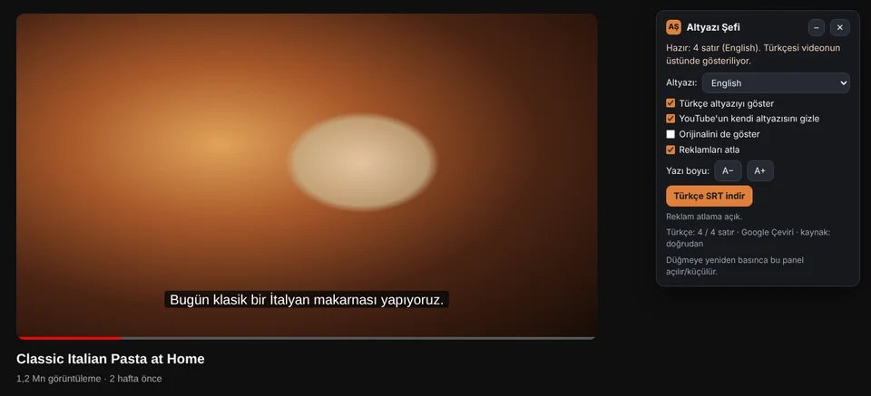
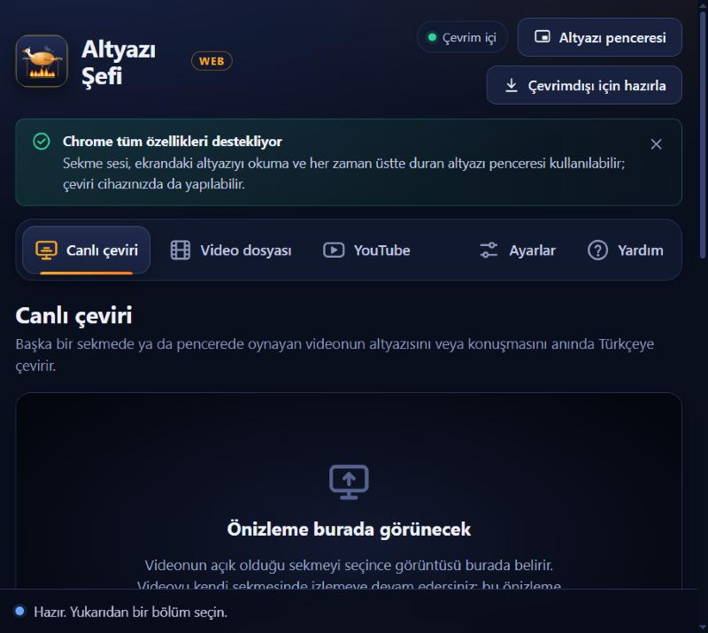
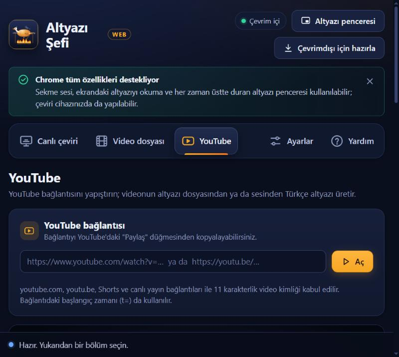
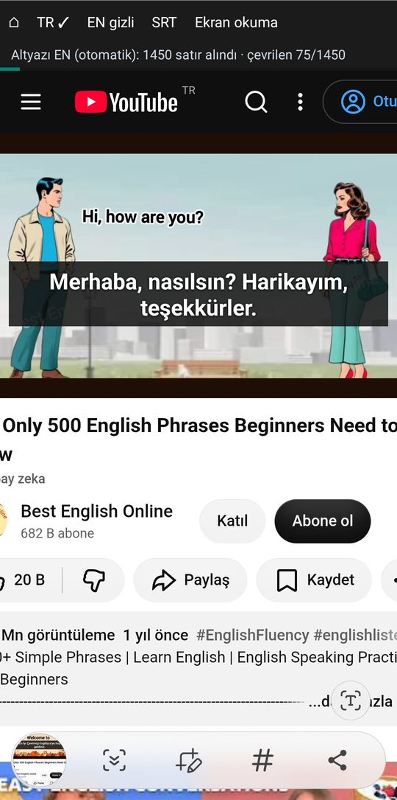
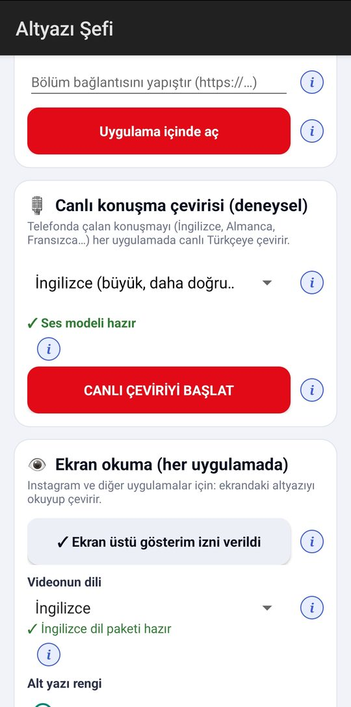
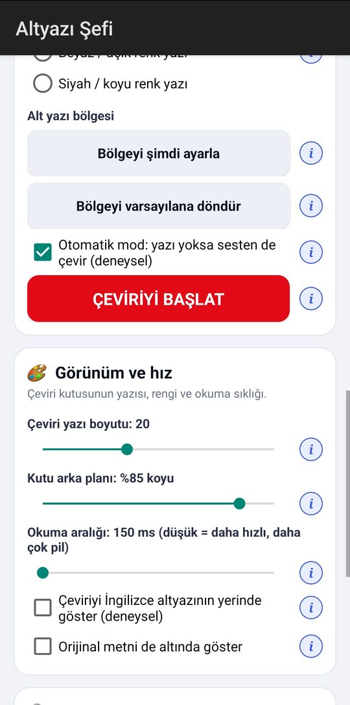
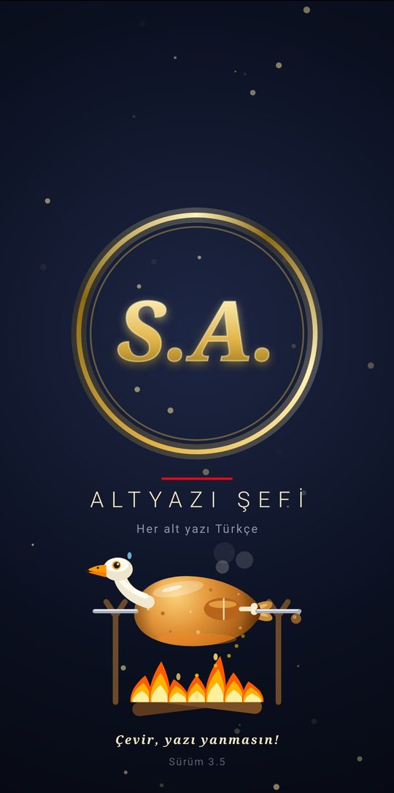

Projeler / Altyazı Şefi
Altyazı Şefi
Yabancı altyazıyı ve konuşmayı anında Türkçeye çeviren uygulama. Kurulum gerektirmez, tarayıcıda açılır; dizi izlerken, video dosyalarında ve YouTube'da çalışır.



Telefon uygulaması (Android)
Altyazı Şefi'nin telefon sürümü (3.5): YouTube'da, Instagram'da ve diğer uygulamalarda altyazıyı ve konuşmayı canlı olarak Türkçeye çevirir.




Bilgisayar sürümünde üç mod
Chrome ve Edge'de tüm özellikler çalışır; Safari ve Firefox'ta ekran okuma ve video dosyası desteklenir.
- Canlı çeviriDiziyi açtığınız sekmedeki altyazıyı okur ve konuşmayı dinler, Türkçesini her zaman üstte duran küçük bir pencerede gösterir.
- Video dosyasıBilgisayardaki videonun altyazısını çevirir; altyazı yoksa konuşmadan çıkarır. Türkçe SRT olarak indirilebilir.
- YouTubeYer imi düğmesiyle videonun altyazısı Türkçeye çevrilir; reklamlar atlanabilir.
- İnternetsiz kullanımBir kez hazırlandıktan sonra ekran okuma, konuşma tanıma ve Chrome'da çeviri internet olmadan çalışır.
- GizlilikGörüntü ve ses bilgisayardan çıkmaz; tanıma işlemleri tarayıcının içinde yapılır.
- İzinle kullanımHer bilgisayar kendine özel bir etkinleştirme koduyla açılır.
Uygulama izinle kullanılır. Açtığınızda ekranda görünen cihaz kodunu bana gönderin, size etkinleştirme kodu iletirim.